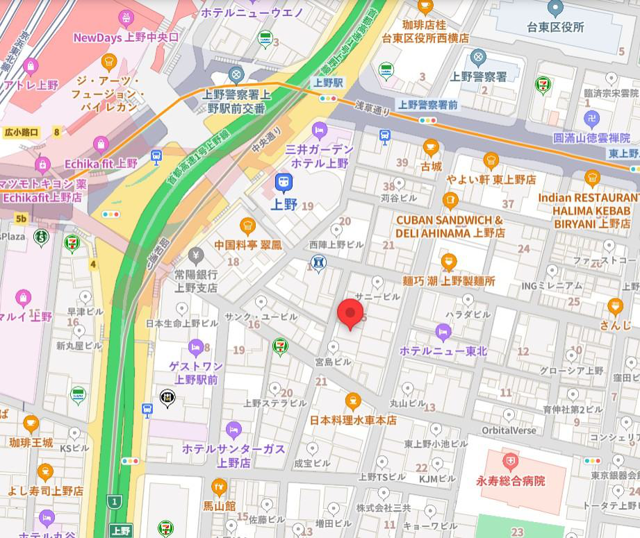

佐藤医院 トップページ

地域に根ざした医療
診療時間
| 時間帯 | 月 | 火 | 水 | 木 | 金 | 土 | 日 | 祝 |
|---|---|---|---|---|---|---|---|---|
| 午前 9:00〜12:00 | ● | ● | ● | ／ | ● | ● | ／ | ※ |
| 午後 13:00〜18:00 | ● | ● | ● | ／ | ● | ／ | ／ | ※ |
※祝祭日も診療を行っておりますが、休診日もございますので、事前にご確認ください。
・受付時間：午前 8:00〜11:00 ／ 午後 12:00〜17:00
・休診日：木曜・土曜午後・日曜
お知らせ
インフルエンザ予防接種について 年末年始の休診について 健康診断のご案内 新型コロナウイルス対策について オンライン診療の導入について もっと見る →診療内容
当院では、地域の皆様の健康を支えるため、幅広い内科診療を行っております。日常的な体調管理から、各種の検査や治療に至るまで、どんなお悩みもお気軽にご相談ください。
一般内科診療
生活習慣病の診断・治療
消化器系の診療
呼吸器系の診療
もっと見る →当院について

佐藤医院は、地域の皆様の健康を守り、より良い生活をサポートすることを使命としています。創立以来、私たちは「患者様一人ひとりに寄り添った診療」を大切にし、地域密着型の医療を提供してまいりました。今後も、皆様の健康維持と病気予防に貢献するため、より良い医療サービスを提供し続けることをお約束いたします。
院長挨拶

佐藤医院 院長
佐藤 太郎
こんにちは。佐藤医院の院長、佐藤太郎と申します。当院のホームページをご覧いただき、ありがとうございます。
佐藤医院では、「地域に根ざした医療」をモットーに、患者様一人ひとりに寄り添った医療を提供することを目指しております。日常的な健康管理から生活習慣病の予防、さらには専門的な診断や治療まで、幅広い内科診療を行い、地域の皆様の健康を支える役割を担っていきたいと考えております。
私たちは、患者様の不安を少しでも軽減し、安心して診療を受けていただけるよう、わかりやすい説明と丁寧な対応を心掛けております。また、近隣の医療機関とも連携し、必要に応じて高度医療へのアクセスもサポートいたします。どんな小さな不調でも、どうぞお気軽にご相談ください。
これからも、患者様の健康を第一に考え、地域の皆様に信頼される医療機関であり続けるため、スタッフ一同努力してまいります。どうぞよろしくお願いいたします。
佐藤医院 院長 佐藤 太郎
スタッフ紹介
地域の皆様に安心してご来院いただけるよう、スタッフ一同、誠心誠意対応いたします。それぞれの専門性と温かさを活かし、皆様の健康を支えるパートナーとしてお力になれるよう努めてまいります。

院長
佐藤 太郎
看護師長
鈴木 真理

臨床検査技師
高橋 由美
医療事務
山本 花
よくあるご質問
診療について

予防接種・健康診断について
お支払いについて
その他
もっと見る →アクセス
〒123-4567
東京都台東区上野0-0-0
最寄駅：JR上野駅より徒歩5分
当院専用の無料駐車場 10台分あり

ご来院の際は、交通状況にご注意ください。最寄駅から徒歩5分の便利な立地です。
- 内科
- 循環器科
- 呼吸器科
- 予防医療・健康診断
- 生活習慣病（高血圧、糖尿病等）の治療・管理
その他、ご不明点があればお電話またはメールでお問い合わせください。

| 時間帯 | 月 | 火 | 水 | 木 | 金 | 土 | 日 | 祝 |
|---|---|---|---|---|---|---|---|---|
| 午前 9:00〜12:00 | ● | ● | ● | ／ | ● | ● | ／ | ※ |
| 午後 13:00〜18:00 | ● | ● | ● | ／ | ● | ／ | ／ | ※ |
※祝祭日も診療を行っておりますが、休診日もございますので、事前にご確認ください。
・受付時間：午前 8:00〜11:00 ／ 午後 12:00〜17:00
・休診日：木曜・土曜午後・日曜